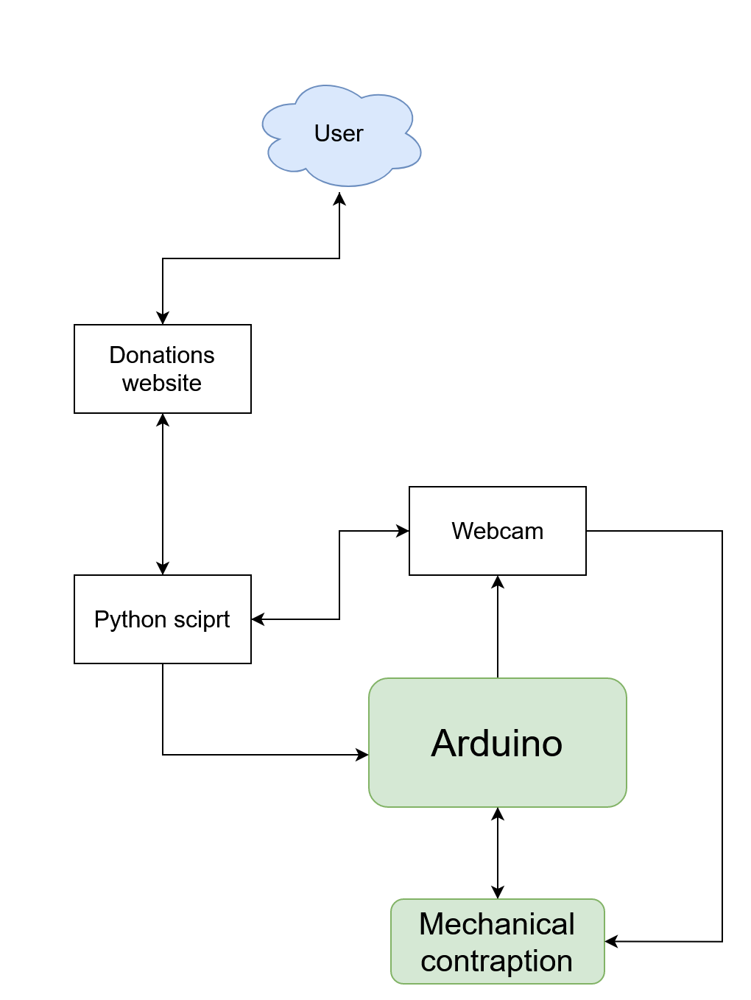

Once you've donated, complete this form to be sent your personalized thank you video!
This will be a photo of your finalized project!
The goal of the project is to create a fun contraption that will serve as an incentive to donate. We decided to make a pachinko machine. Whenever someone makes a donation, it will activate the machine and a recording of the marbles rolling down the pachinko machine will be sent to the donor. The number of marbles dropped will correspond to the amount of money donated-- one marble for every 2 dollars. The inspiration for this project came from wanting to create something that brings joy to people for donating to our cause.
Meet the team.
The Food Bank of Central & Eastern North Carolina is a nonprofit organization that has provided food for our friends and neighbors facing hunger in 34 counties in central and eastern North Carolina for 40 years. The Food Bank works across the food system to provide access to nutritious food that nourishes families, children, seniors, and individuals. Through partnerships, education, and programs, the Food Bank empowers communities to overcome hunger, creating an environment where all North Carolinians thrive.
Whenever someone makes a donation, it will activate the machine, and we will design a system to have it reset on it’s own. The number of marbles dropped will correspond to the amount of money donated-- one marble for every 2 dollars.